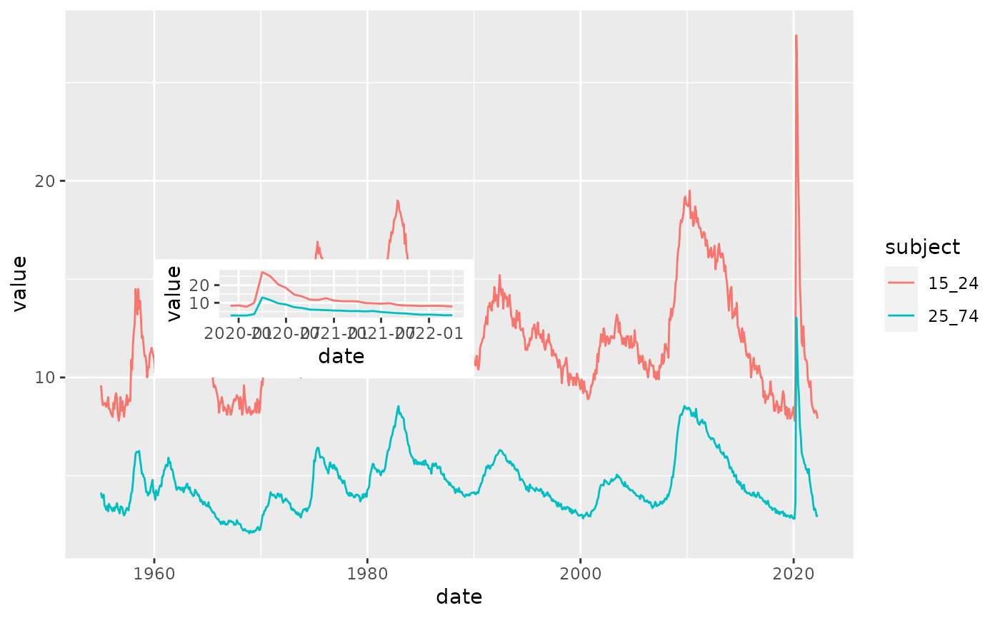

R/oecd_unemployment_data.R
oecd_unemployment_data.RdThe Organisation for Economic Co-operation and Development (OECD) is an international organisation and collects and reports broadly on economic and social factors.
oecd_unemployment_data()a data.frame
Unemployment rate is the number of unemployed people as a percentage of the labour force, where the latter consists of the unemployed plus those in paid or self-employment. Unemployed people are those who report that they are without work, that they are available for work and that they have taken active steps to find work in the last four weeks. When unemployment is high, some people become discouraged and stop looking for work; they are then excluded from the labour force. This implies that the unemployment rate may fall, or stop rising, even though there has been no underlying improvement in the labour market.
OECD (2020), Unemployment rate (indicator). doi: 10.1787/997c8750-en (Accessed on 05 June 2020)
Other data-import:
acaps_government_measures_data(),
acaps_secondary_impact_data(),
apple_mobility_data(),
beoutbreakprepared_data(),
cci_us_vaccine_data(),
cdc_aggregated_projections(),
cdc_excess_deaths(),
cdc_social_vulnerability_index(),
coronadatascraper_data(),
coronanet_government_response_data(),
cov_glue_lineage_data(),
cov_glue_newick_data(),
cov_glue_snp_lineage(),
covidtracker_data(),
descartes_mobility_data(),
ecdc_data(),
econ_tracker_consumer_spending,
econ_tracker_employment,
econ_tracker_unemp_data,
economist_excess_deaths(),
financial_times_excess_deaths(),
google_mobility_data(),
government_policy_timeline(),
jhu_data(),
jhu_us_data(),
kff_icu_beds(),
nytimes_county_data(),
owid_data(),
param_estimates_published(),
test_and_trace_data(),
us_county_geo_details(),
us_county_health_rankings(),
us_healthcare_capacity(),
us_hospital_details(),
us_state_distancing_policy(),
usa_facts_data(),
who_cases()
unemp = oecd_unemployment_data()
unemp
#> # A tibble: 42,106 × 10
#> iso3c indicator subject measure frequency value `flag codes` date
#> <chr> <chr> <chr> <chr> <chr> <dbl> <chr> <date>
#> 1 GBR unemp 15_24 PC_LF annual 19.6 NA 1983-01-01
#> 2 GBR unemp 15_24 PC_LF annual 18.7 NA 1984-01-01
#> 3 GBR unemp 15_24 PC_LF annual 18.0 NA 1985-01-01
#> 4 GBR unemp 15_24 PC_LF annual 17.7 NA 1986-01-01
#> 5 GBR unemp 15_24 PC_LF annual 15.1 NA 1987-01-01
#> 6 GBR unemp 15_24 PC_LF annual 12.2 NA 1988-01-01
#> 7 GBR unemp 15_24 PC_LF annual 9.95 NA 1989-01-01
#> 8 GBR unemp 15_24 PC_LF annual 10.4 NA 1990-01-01
#> 9 GBR unemp 15_24 PC_LF annual 13.9 NA 1991-01-01
#> 10 GBR unemp 15_24 PC_LF annual 16.4 NA 1992-01-01
#> # … with 42,096 more rows, and 2 more variables: country <chr>, region <chr>
dplyr::glimpse(unemp)
#> Rows: 42,106
#> Columns: 10
#> $ iso3c <chr> "GBR", "GBR", "GBR", "GBR", "GBR", "GBR", "GBR", "GBR", "…
#> $ indicator <chr> "unemp", "unemp", "unemp", "unemp", "unemp", "unemp", "un…
#> $ subject <chr> "15_24", "15_24", "15_24", "15_24", "15_24", "15_24", "15…
#> $ measure <chr> "PC_LF", "PC_LF", "PC_LF", "PC_LF", "PC_LF", "PC_LF", "PC…
#> $ frequency <chr> "annual", "annual", "annual", "annual", "annual", "annual…
#> $ value <dbl> 19.625, 18.725, 17.975, 17.725, 15.125, 12.200, 9.950, 10…
#> $ `flag codes` <chr> NA, NA, NA, NA, NA, NA, NA, NA, NA, NA, NA, NA, NA, NA, N…
#> $ date <date> 1983-01-01, 1984-01-01, 1985-01-01, 1986-01-01, 1987-01-…
#> $ country <chr> "United Kingdom", "United Kingdom", "United Kingdom", "Un…
#> $ region <chr> "Europe & Central Asia", "Europe & Central Asia", "Europe…
summary(unemp)
#> iso3c indicator subject measure
#> Length:42106 Length:42106 Length:42106 Length:42106
#> Class :character Class :character Class :character Class :character
#> Mode :character Mode :character Mode :character Mode :character
#>
#>
#>
#> frequency value flag codes date
#> Length:42106 Min. : 0.7931 Length:42106 Min. :1955-01-01
#> Class :character 1st Qu.: 5.6000 Class :character 1st Qu.:1997-02-01
#> Mode :character Median : 9.0000 Mode :character Median :2006-08-01
#> Mean :11.5753 Mean :2004-08-22
#> 3rd Qu.:15.7000 3rd Qu.:2014-05-01
#> Max. :62.9000 Max. :2022-04-01
#> country region
#> Length:42106 Length:42106
#> Class :character Class :character
#> Mode :character Mode :character
#>
#>
#>
library(ggplot2)
us_month_unemp = unemp %>%
dplyr::filter(iso3c=='USA' & frequency=='month')
p1 = ggplot(us_month_unemp,aes(x=date,y=value,color=subject)) + geom_line()
p2 = dplyr::filter(us_month_unemp,date>'2019-11-01') %>%
ggplot(aes(x=date,y=value,color=subject)) +
geom_line() + theme(legend.position='none')
p1 + annotation_custom(ggplotGrob(p2),
xmin = as.Date("1960-01-01"), xmax = as.Date("1990-01-01"),
ymin = 10, ymax = 16)
